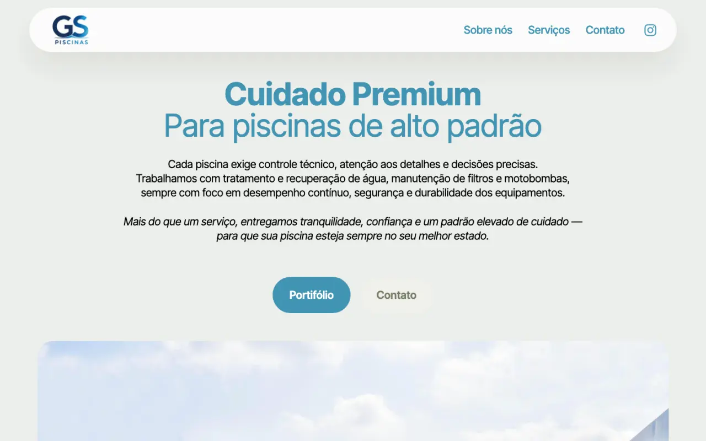
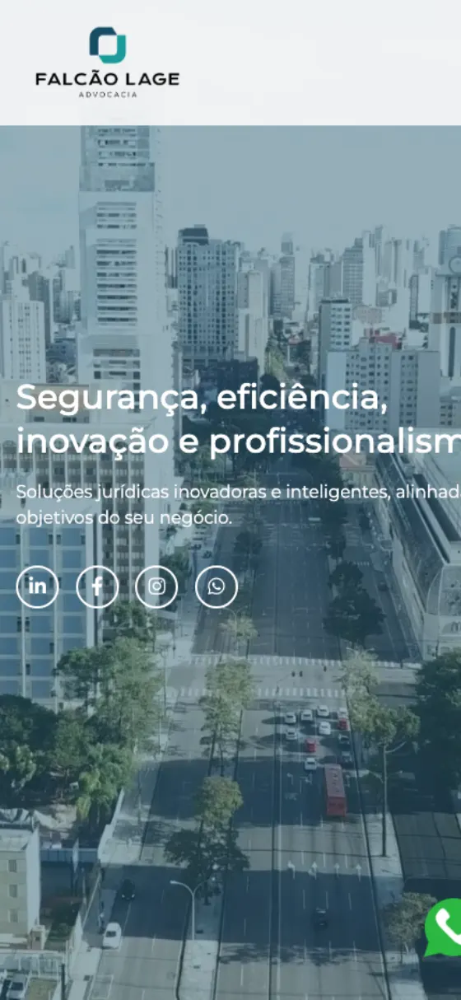

Backend & APIs
REST services that hold up in production: authentication, multi-tenant data, integrations, background jobs and observability.
- Python
- FastAPI
- Flask
- Chalice
- Laravel
Curitiba, Brazil · remote has no borders 🌎
Senior Software Engineer · TOTVS · Founder of Element
15+ years turning ideas into clean, scalable code. Today I build generative AI — LLMs, RAG and agents — on top of Python backends and cloud-native architecture. And I run my own software house.
What I do
I like problems that involve APIs, automation and something clever with AI. Below is what I reach for every week — not a list of things I once touched.
REST services that hold up in production: authentication, multi-tenant data, integrations, background jobs and observability.
LLMs inside the product, not as a demo: RAG over real documents, agent workflows, natural-language interfaces and evaluation that actually measures something.
Infrastructure as code, containers and pipelines that ship on merge. Three clouds in production, GCP as the daily one.
Interfaces built with the API on the other side in mind — the contract between the two is never an afterthought.
Relational, key-value and document stores. Modelling, indexing and query plans — because the slow part is almost always the database.
TDD, code review and CI that blocks the bad merge. Plus the part I enjoy most: mentoring, knowledge sharing and building community.
Selected work
Built through Element, my software house — product, engineering and infrastructure under one roof.






The journey
Built and published my first website. Nothing about it was good — but it was live, and that was enough to decide the next twenty years.
An HR company in Curitiba handed a teenager its entire IT and digital marketing. In parallel, technical courses in Linux and web design.
Six years and nine months reading Java stack traces over SSH to find why an ATM had failed somewhere in southern Brazil. Log analysis, Linux, VBA — and the internal web tools that automated my own team.
Graduated in Systems Analysis and Development, and moved up to Advanced Support Analyst. Technical courses in operating systems and C++ along the way.
Opened a web design and digital marketing company, and switched roles at Caixa to specialised support and PHP development. The first in-house CRM, from scratch and with no framework, came out of this.
Two years building web and desktop applications over RealTime Asterisk servers — PBX management. On the side: Blanche Turismo, Pizzaria Treviso, Legis Dei and Portal RC.
Two and a half years on a business management SaaS, mid-level to senior. PHP and Laravel, Python, Vue and Node on the front, and AWS underneath — SQS, S3, API Gateway, SES, DynamoDB.
Generative AI as the daily job: LLMs, RAG and agents on Python backends, Angular and Next.js on top, GCP underneath. In parallel, two years at outsera on AI solutions.
I own and run Element: a Brazilian software house shipping mobile, desktop and web products end to end. Monnif, Postgly, GS Piscinas and Falcão Lage came out of it.
Where I work
I am a Senior Software Engineer at TOTVS, working on generative AI inside products that thousands of companies depend on at the same time. At this size the engineering changes: multi-tenant is the default, cost per request is a real budget line, and a change that looks small in the editor can be expensive in production.
TOTVS is the largest software company in Brazil and the leading ERP vendor in Latin America. Founded in 1983 and publicly traded on B3 (TOTS3), it serves companies across practically every sector of the Brazilian economy — retail, agribusiness, manufacturing, healthcare, services. Software at that reach is infrastructure: when it stops, it is never one company that feels it.
A project, a role, a question about AI in production, or just to say hi. I read everything and I answer.